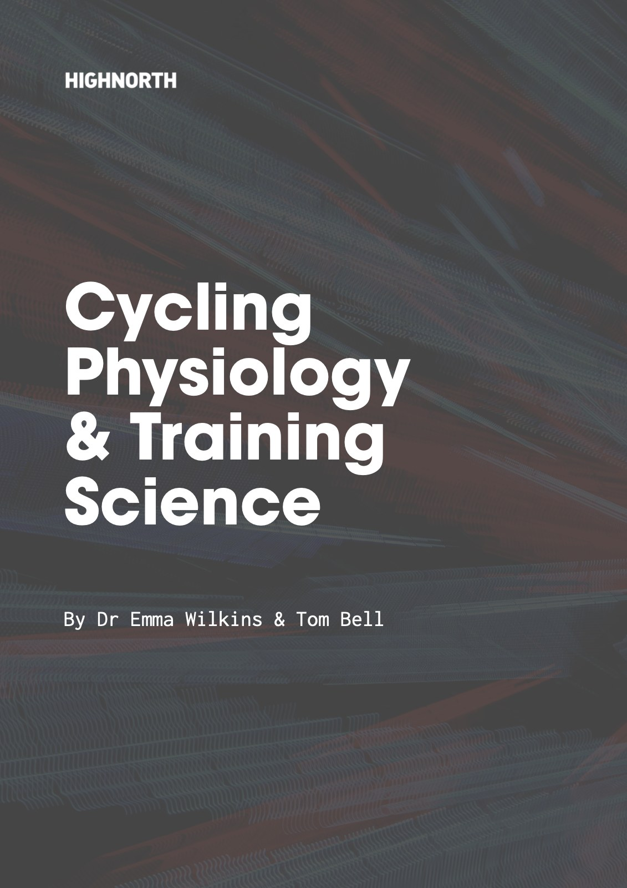

一本自行車訓練書的十條收尾原則

一本講生理學的自行車訓練書，最後一章，只有十條原則，這十條原則很受用，在此跟大家分享一下。
這本書是英國自行車教練 Emma Wilkins 與 Tom Bell 寫的《The Cycling Physiology and Training Science Guide》。前面十七章談能量系統、乳酸、測驗、週期化與課表設計。到了最後，作者提醒讀者別陷在這些細節裡，然後談十個訓練的原則（Wilkins & Bell, 2021, 頁 280–282）。我覺得很棒！
先介紹一下兩位作者。
Tom Bell 本身就是頂尖車手：二〇二一年拿下英國全國爬坡賽男子冠軍，二〇一七年拿過越野登山車馬拉松的全國冠軍，在世界盃越野登山車賽場上征戰了將近十年。他在里茲大學念書時就是校隊隊長，拿過英國大專賽冠軍。後來他創辦 High North Performance，做教練指導與代謝測驗，指導過來自二十五個以上國家、數百位運動員。
Emma Wilkins 是牛津大學物理系畢業，之後在里茲貝克特大學取得運動與運動營養碩士，博士做的是公共衛生的大數據研究。她是合格的運動營養師，現在是里茲大學食品科學與營養學院的研究員，同時也是 High North 的負責人。
這兩位作者，一位是在賽場上拿冠軍的車手兼教練，一位是受過物理與資料分析訓練的研究者，這本書會同時有實戰的手感與數據的嚴謹，我想跟這樣的組合有關。
我讀完的感覺是：這十條換成跑步、游泳或鐵人三項也一樣適用。
◆ 第 ❶ 條：訓練的一致性最重要。
能讓人規律訓練下去的課表，就已經有了好計畫的八成。所以要避免把自己練到倦怠、受傷或生病，然後中斷好幾週。作者給的建議很實際：如果你知道自己是會過度努力的人，就把計畫排得比你認為做得到的再少一點，那可能就是剛好的量。
◆ 第 ❷ 條：新手或中斷很久的人，要循序漸進。
先把自己練成全面的運動員，把肌力與有氧基礎打好，才承受得住之後的訓練量與強度。
◆ 第 ❸ 條：每個中週期都要有足夠的 2 區訓練。
先說明作者的 2 區怎麼算。書中用的是科根（Coggan）的七區制，2 區是功率 55% 至 75% FTP；用心率來看，是閾值心率的 68% 至 83%，或最大心率的 60% 至 70%（Wilkins & Bell, 2021, 頁 159）。
要特別提醒的是，每個人定義的 2 區都不一樣。不同的書、教練、手錶與 App，區間的切法和計算基準都不同，同樣叫「2 區」，強度可能差很多。所以讀這一條時，不要直接拿自己錶上的 2 區來套。
大約八成的課表放在 2 區。作者特別點出一個常見的問題：一趟騎乘的標準化功率落在 2 區，不代表它是一趟有品質的 2 區騎乘。所以作者建議至少一半的騎乘時間要落在 2 區，必要時換平一點的路線，或少參加幾次團騎。
◆ 第 ❹ 條：訓練要有變化。
長短課表交錯，也要有一些中、高強度。
◆ 第 ❺ 條：訓練日與恢復日要分明。
恢復日寧可多排。作者說多數車手傾向練太多，而身體是在恢復的日子裡才變強。
◆ 第 ❻ 條：找出自己的強項與限制因子。
不一定要靠測驗，比賽時在哪裡超前、在哪裡掉隊，就是很好的線索。
◆ 第 ❼ 條：傾聽身體，它是判斷訓練與體能進展的最佳指引。
這是我最認同的一條。作者說，如果 TSS、CTL 這些指標和你在車上的感覺不一致，就不要去追它們；測驗得出的區間如果感覺不對，也不要盲目相信。一本用了大量篇幅談數據的書，最後把判斷權交還給身體的感覺，我覺得這是很誠實的結論。
這也是我在 KFCS 一直強調的「感覺優先於數據」：訓練當下先專心感受身體，練完再回頭看數據，拿來和自己的感覺對照。
❝ 數據只是輔助。❞
我在教練培訓班時也時常提醒：「數據只是輔助我們的感覺與感受、知覺的工具，它不是主角。」
◆ 第 ❽ 條：別陷在細節裡。
間歇做 7 分鐘還是 8 分鐘、騎 95% 還是 98% FTP，從大局看沒有太大差別。
◆ 第 ❾ 條：沒有神奇子彈。
不要被宣稱效果驚人的新課表分心，持續做經過時間考驗的方法。
◆ 第 ❿ 條：需要時，別怕尋求建議。
找有過類似經驗的車友、隊友或教練聊一聊。
這十條沒有一條是新觀念，卻是最常被忘記的觀念。讀完之後想跟大家分享一下。
📚 資料來源
▹ Wilkins, E., & Bell, T. (2021). The cycling physiology and training science guide. High North Performance.